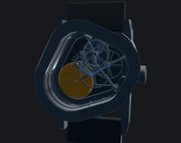
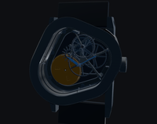
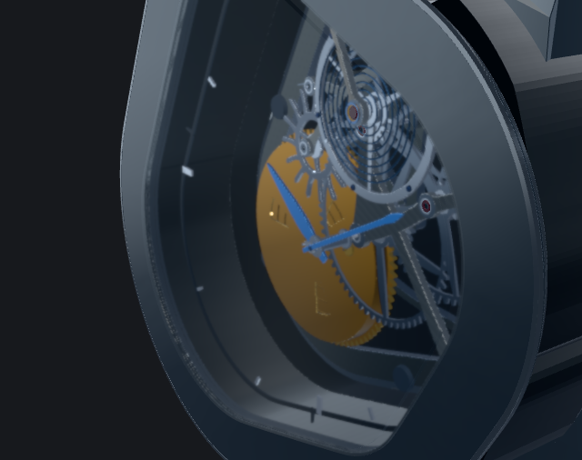
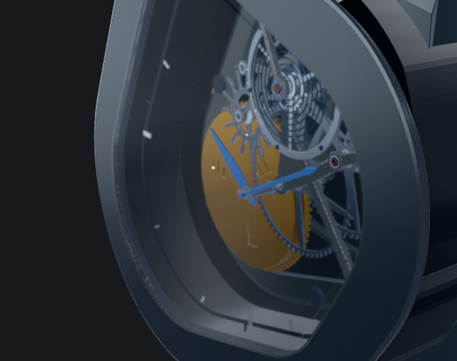

The default remains graphite-finish. The opt-in graphite-sapphire candidate restores stronger grazing reflection while preserving the normal-incidence reflectance parameter. No case geometry, movement, palette, exposure, authored camera or global lighting changes.
Settings and findings · Separate case diagnosis · Frozen-base evidence · 8 scope and sweep checks · 37 interaction checks
Visual assessment: improved crystal presence; Hero and rear readability retained. Gold stays subdued, as in the frozen base. Stronger reflection reduces some movement contrast at the steepest sweep angle. No additional Hero light is proposed.


Normal brightness, then 50% linear display-luminance simulation. This is not a calibrated physical-display test.




Five diagnostic samples around the unchanged Sapphire preset. Drag to compare reflection behavior. This is a sampled study, not a continuous frame-rate demonstration.

